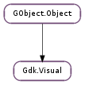

| Subclasses: | GdkX11.X11Visual |
|---|
| static | get_best() |
| static | get_best_depth() |
| static | get_best_type() |
| static | get_best_with_both(depth, visual_type) |
| static | get_best_with_depth(depth) |
| static | get_best_with_type(visual_type) |
| static | get_system() |
| get_bits_per_rgb() | |
| get_blue_pixel_details() | |
| get_byte_order() | |
| get_colormap_size() | |
| get_depth() | |
| get_green_pixel_details() | |
| get_red_pixel_details() | |
| get_screen() | |
| get_visual_type() |
None
None
Bases: GObject.Object
The Gdk.Visual structure contains information about a particular visual.
| Returns: | best visual |
|---|---|
| Return type: | Gdk.Visual |
Get the visual with the most available colors for the default GDK screen. The return value should not be freed.
| Returns: | best available depth |
|---|---|
| Return type: | int |
Get the best available depth for the default GDK screen. “Best” means “largest,” i.e. 32 preferred over 24 preferred over 8 bits per pixel.
| Returns: | best visual type |
|---|---|
| Return type: | Gdk.VisualType |
Return the best available visual type for the default GDK screen.
| Parameters: |
|
|---|---|
| Returns: | best visual with both depth and visual_type, or None if none |
| Return type: |
Combines Gdk.Visual.get_best_with_depth () and Gdk.Visual.get_best_with_type ().
| Parameters: | depth (int) – a bit depth |
|---|---|
| Returns: | best visual for the given depth |
| Return type: | Gdk.Visual |
Get the best visual with depth depth for the default GDK screen. Color visuals and visuals with mutable colormaps are preferred over grayscale or fixed-colormap visuals. The return value should not be freed. None may be returned if no visual supports depth.
| Parameters: | visual_type (Gdk.VisualType) – a visual type |
|---|---|
| Returns: | best visual of the given type |
| Return type: | Gdk.Visual |
Get the best visual of the given visual_type for the default GDK screen. Visuals with higher color depths are considered better. The return value should not be freed. None may be returned if no visual has type visual_type.
| Returns: | system visual |
|---|---|
| Return type: | Gdk.Visual |
Get the system’s default visual for the default GDK screen. This is the visual for the root window of the display. The return value should not be freed.
| Returns: | The number of significant bits per color value for visual. |
|---|---|
| Return type: | int |
Returns the number of significant bits per red, green and blue value.
| Return type: | mask: int, shift: int, precision: int |
|---|
Obtains values that are needed to calculate blue pixel values in TrueColor and DirectColor. The “mask” is the significant bits within the pixel. The “shift” is the number of bits left we must shift a primary for it to be in position (according to the “mask”). Finally, “precision” refers to how much precision the pixel value contains for a particular primary.
| Returns: | A Gdk.ByteOrder stating the byte order of visual. |
|---|---|
| Return type: | Gdk.ByteOrder |
Returns the byte order of this visual.
| Returns: | The size of a colormap that is suitable for visual. |
|---|---|
| Return type: | int |
Returns the size of a colormap for this visual.
| Returns: | The bit depth of this visual. |
|---|---|
| Return type: | int |
Returns the bit depth of this visual.
| Return type: | mask: int, shift: int, precision: int |
|---|
Obtains values that are needed to calculate green pixel values in TrueColor and DirectColor. The “mask” is the significant bits within the pixel. The “shift” is the number of bits left we must shift a primary for it to be in position (according to the “mask”). Finally, “precision” refers to how much precision the pixel value contains for a particular primary.
| Return type: | mask: int, shift: int, precision: int |
|---|
Obtains values that are needed to calculate red pixel values in TrueColor and DirectColor. The “mask” is the significant bits within the pixel. The “shift” is the number of bits left we must shift a primary for it to be in position (according to the “mask”). Finally, “precision” refers to how much precision the pixel value contains for a particular primary.
| Returns: | the screen to which this visual belongs. |
|---|---|
| Return type: | Gdk.Screen |
Gets the screen to which this visual belongs
| Returns: | A Gdk.VisualType stating the type of visual. |
|---|---|
| Return type: | Gdk.VisualType |
Returns the type of visual this is (PseudoColor, TrueColor, etc).